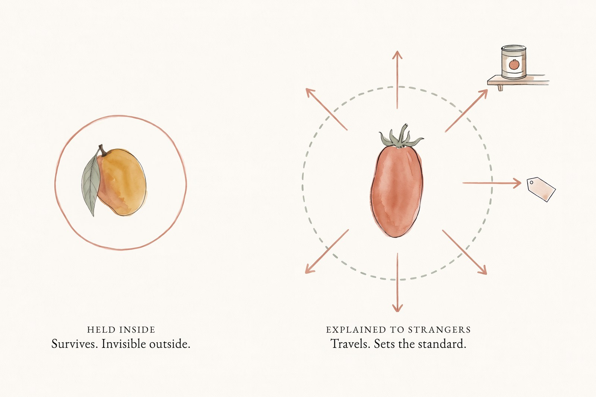

Who Gets to Define Taste?
A beer book, a mango, a jaggery sold like a wine, and the question of why India's depth so rarely gets written down for strangers.

I was sipping cold coffee at a café, flipping through Wine, Beer and Spirits by Robert Joseph, Roger Protz and Dave Broom.
I paused at the beer section: Trappist breweries in Belgium, the taxonomy of German and Dutch styles (I love trying different kinds). Then wine, then whisky. Regions, histories, classifications. Layer after layer of nuance. Depth. Obsession.
And that got me thinking. Why don’t we have this kind of visible sophistication around our own things in India? Food, craft, produce. Or maybe we do, and it simply isn’t written down, isn’t argued about, isn’t given the framing it gets in Europe.
Take mangoes. We have hundreds of varieties, and outside a few famous names, how much do any of us know about their flavours, their soils, their histories? Indian mangoes get reduced to Alphonso. Indian food, for much of the world, becomes curry, butter chicken and naan. I’m exaggerating, but only slightly.
Then, this year, I saw what it looks like when someone does build it. In March I ordered a gift box called Nolen Noir from Earth Story Farms, a small Kolkata brand that works with date-palm jaggery makers in Bankura. Two and a half thousand rupees, for jaggery, in a limited edition of three hundred. The founder, Senjuti Mahato, had been to Champagne and come back with a method: she mapped her trees by soil, tasted the sap of fifty of them with a chef, and kept the old trees on gravel, where the roots have to work for their water. Less water, more character, the same rule as a vineyard. “It works on the same template as Champagne,” she told Mint.
Terroir. For jaggery. It was the first time I’d seen the word used for something from here, and the strange part was how natural it sounded.
So why is that rare?
Who gives taste its authority?
One way to read this: France and Italy didn’t become the reference points for fine food because their traditions were deeper than everyone else’s. They built the machinery around the traditions. Schools. Critics. Guides. Appellations. A whole vocabulary that teaches a stranger what to notice in a glass.
Then the vocabulary travelled, carried by trade, wealth, media and older histories of European power, until a set of regional habits started to feel like the universal standard.
I keep noticing this elsewhere. Why does a Michelin star carry such weight? It’s a private company with a particular history. Why do we get so excited when an Indian film is noticed at the Oscars? We have our own audiences, our own awards. And still, recognition from there means something different. I’m not saying those judges are wrong. I’m asking how an institution gets the authority to tell everyone else what excellence looks like.
In India there’s a history underneath this too. British rule changed which kinds of knowledge counted; some traditions were pushed to the margins and survived outside the institutions. After independence, survival came before refinement. And we’ve grown up inside a world of global media where certain references feel sophisticated by default. That’s a sketch, not an explanation, but it shapes whose standards feel natural to us.
Or maybe we’re just wired differently
Here I’m more speculative, so bear with me.
Think of a Western orchestra: everything written down, a hundred people coordinated around a score. Then Indian classical music, where raga and tala give you a frame and most of what you hear is improvised in the moment. Think of the sheer sprawl of Hindu scripture, the gods, the interpretations. Expansive rather than codified. Maybe we’re simply wired to care less about ordering the external world.
It’s an attractive thought. It also falls apart as soon as you look at it.
Hindustani classical is intensely systematised: raga grammar, tala cycles, gharana lineages, decades of guru-shishya rigour. Carnatic music has its own elaborate structures. We have long histories of cataloguing and commentary well beyond music. We clearly can classify, and obsessively.
So it was never about structure versus spontaneity. The difference is who the system was built for. Ours mostly stayed inside: oral, embodied, passed from teacher to student, held by a community rather than any one person. That is how it survived. But a system that lives only inside a community is invisible to anyone outside it. We rarely wrote the guidebook, trained the critic, built the institution that explains us to strangers.
That’s a different claim from “we are wired against structure”, and I think it’s the truer one.

Even the standard is up for grabs
David Harvey’s essay The Art of Rent gave me one more twist. In his pages on wine, French producers defend terroir: the place, the soil, the history. Then an American critic, Robert Parker, starts scoring wines on his own hundred-point scale, and prices begin to move on his numbers rather than on the old hierarchy of places.
Two sources of authority, neither of them an objective reading of quality. Both deciding what deserves a premium.
That complicates my instinct to call for more classification. Whose classification? A single guide to Indian sweets might help people appreciate them. It might just as easily favour the makers its authors already know.
Something is changing
And something is moving. I’ve heard Indian music travel, mix with electronics and come back sounding like something new. I’ve watched chefs argue, quite seriously, about what in an old recipe can change and what must stay. More people here are documenting, curating and reinterpreting what we already have, with enough confidence to make something new from it. That’s not culture being lost. That’s culture staying alive.
I started with a book about beer and a question about why we don’t write more about our own traditions. I still think we should. That book taught me what to notice.
It also left me with a harder question: how one way of judging taste becomes the standard everyone reaches for, and who earns the right to say what something is worth.
Sources and notes
- David Harvey, The Art of Rent (2002), section II on wine and terroir
- Rituparna Roy, “Like Champagne, nolen gur is all about terroir”, Mint Lounge, 24 Jan 2026
- Robert Joseph, Roger Protz and Dave Broom, Wine, Beer and Spirits